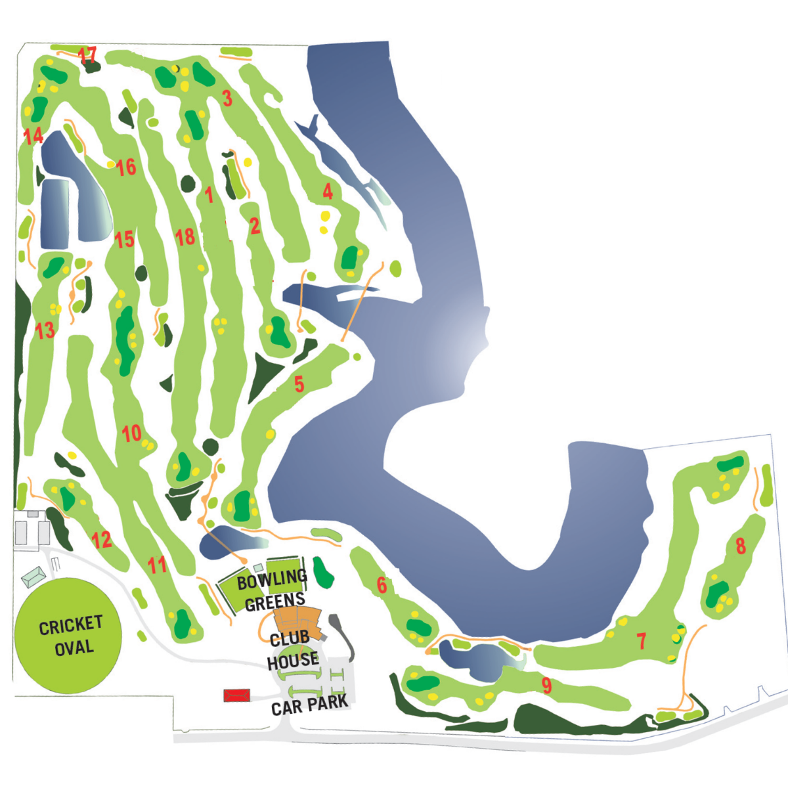

Course Map
Worrigee Links
Pinch or scroll to zoom, drag to pan around the course.

Double-tap or double-click to zoom in on a spot.
Loading Map...
Pinch or scroll to zoom, drag to pan around the course.

Double-tap or double-click to zoom in on a spot.